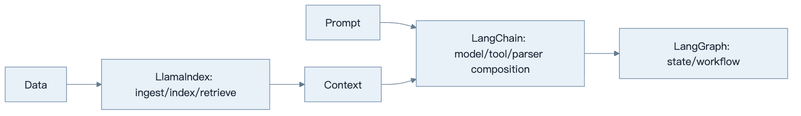
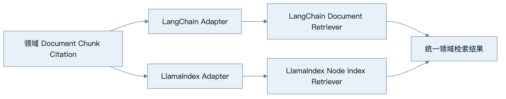
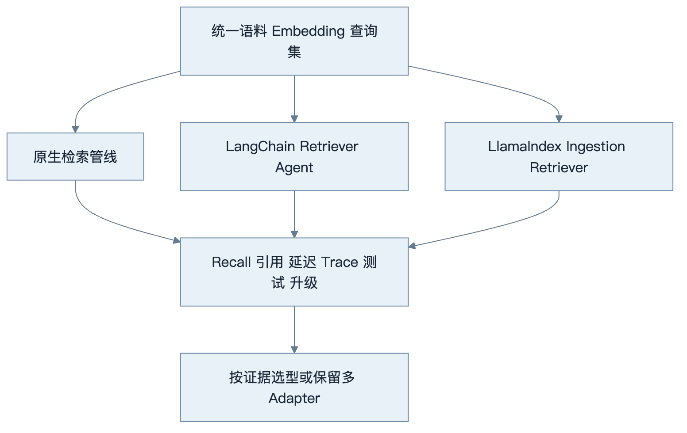
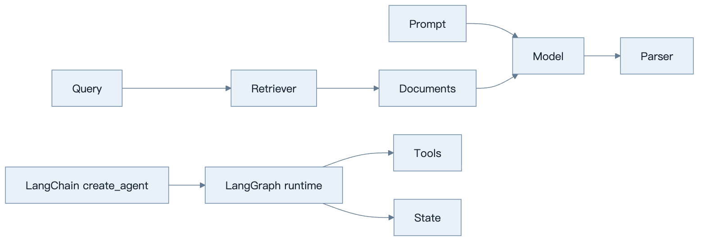
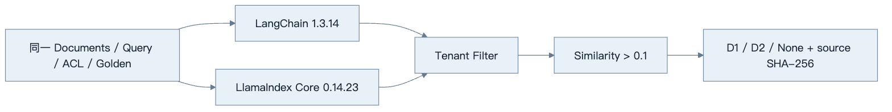

第21章：LangChain 与 LlamaIndex
最后核对日期：2026-08-07；LangChain 1.3.14（core 1.5.3）与 LlamaIndex Core 0.14.23 已在独立 Python 3.12 环境安装并完成同题检索实测。
导读、目标与前置知识
LangChain 提供模型、Prompt、Tool、Retriever 和 Parser 等组合抽象；LangGraph承载有状态编排。LlamaIndex 聚焦 Document、Node、Index、Retriever 与 Query Engine。本章比较其适用场景与锁定风险。
学习目标是以同一 RAG 示例比较原生、LangChain 与 LlamaIndex。前置知识为第13、17、20章。
核心原理与架构
LangChain、LlamaIndex 与 LangGraph 覆盖不同抽象层。下图给出一种常见组合，但各层都可以被原生实现替代。

这只是常见组合，不是强制分层。简单 RAG 可以只用一个库或原生代码。

业务 ID、版本、ACL 和来源位置属于领域契约。框架对象只存在于 Adapter 内部，才能比较实现或安全回退。

框架选型应来自同条件实验，不来自教程代码长度。尤其要记录安全过滤、可观测和版本升级成本。
最小与完整工程
同一 Markdown 检索任务分别用原生接口和框架实现，比较代码量、Trace、测试替身、持久化和升级成本。工程版把领域 Document 和框架 Node 隔离在适配器后，避免业务层依赖内部对象。
误区、调试、实践与安全
不要因教程方便就引入全套框架，不要混用多个过时链式 API。调试先看框架实际发送的请求、召回候选和回调事件。框架组件仍需权限过滤、超时和数据治理。
总结、练习、面试与阅读
LangChain 的历史定位与当前边界
LangChain 早期以 Chain、Prompt、Model、Tool、Agent、Retriever 和 Output Parser 等抽象快速组合 LLM 应用。随着工具循环和持久状态变复杂，LangGraph 成为底层有状态运行时。当前官方 create_agent 构建在 LangGraph 上，支持 tools、middleware、structured output、state 与 streaming。旧教程中的若干 Chain/Agent API 不应自动当成 2026 推荐写法。
Chain 适合确定的数据变换，例如 Prompt → Model → Parser；Agent 允许模型动态选择工具。Retriever 只负责根据查询返回 Document，不负责生成；Output Parser 把文本转换为结构，但 provider-native structured output 或 Tool Strategy 可能更可靠。选型先看任务，不为统一风格把所有函数包装为 Chain。

Chain 适合确定性数据变换；Agent 适合动态工具选择。LangGraph 提供底层状态运行时，但并不要求所有 RAG 都变成 Agent。
Tool、Structured Output 与 Middleware
当前 LangChain 工具可由普通 Python 函数/协程或 decorator 定义。描述、参数 Schema 和 runtime context 决定模型选择与执行。Structured Output 可选择 ProviderStrategy 或 ToolStrategy；最终结构位于 Agent State 的 structured response 字段。应用仍执行业务验证和权限。
Middleware 可实现模型路由、动态工具、上下文修改、guardrail 和观测。它是横切边界，顺序会影响行为。不要在多个 middleware 中静默改同一消息或状态；测试每个 middleware 的输入输出，并限制敏感内容进入 Trace。
LlamaIndex 的核心抽象
Document 表示摄取源及 Metadata；Node 是经过解析/切分后用于索引的细粒度单元；Index 组织 Node 以支持查询；Retriever 返回相关 Node；Query Engine 组合检索、后处理与响应合成。RAG Pipeline 还包含 Reader、Transformation、Embedding、Vector Store 和 Evaluation。
这些对象是框架的数据模型，不应直接成为企业领域模型。业务层保存自己的 Document ID、版本、ACL 和来源位置，通过 Adapter 转成 LlamaIndex Node。否则升级框架或切换检索器时，数据库和 API 会被内部字段锁定。
# 已按 llama-index-core==0.14.23 的接口核对；生产代码仍需显式传入
# embed_model、MetadataFilters、引用映射和拒答阈值。
documents = reader.load_data()
index = VectorStoreIndex.from_documents(documents)
retriever = index.as_retriever(similarity_top_k=8)
nodes = retriever.retrieve("checkpoint 如何支持恢复？")
示例适合学习数据流，不代表完整企业 RAG。生产还需自定义解析、ACL、版本、删除、引用和评估。
Query Engine 与可组合 RAG
Query Engine 通常把 query transformation、retrieval、node postprocessor 和 response synthesizer 组合起来。Router 或 SubQuestion 能处理多索引/复杂问题，但增加模型调用和调试层。先用 Retriever 的 Recall@k 建立基线，再引入高级 Engine。
LlamaIndex 连接器很多，版本和依赖拆分也频繁。项目固定只需要的集成包，避免安装巨大 extras。外部 Reader 返回的 Metadata 不可信，转换阶段统一清洗与权限映射。
对照实验与完整工程
选择一个 Markdown 知识库，用三种实现对照：原生 Python/向量接口、LangChain Retriever + create_agent、LlamaIndex ingestion + retriever。统一语料、Embedding、top-k 和评估集，记录代码量、Recall、引用、延迟、Trace、测试便利与升级面。
工程在 domain/ 定义 Chunk、Citation 和 Answer，在 adapters/langchain.py、adapters/llamaindex.py 做转换。这样可以同时跑两个候选或回退原生实现。不要在业务代码到处导入框架 Document/Node。
本章同题 Spike 固定三份文档：alpha 租户的 MCP 与 RAG 文档，以及 beta 租户的秘密事故文档。Q1、Q2 应分别命中 D1、D2；alpha 主体的 Q3 即使与 D3 高度相似也不得越权召回，并且不能用相似度为零的 D1/D2 拼出答案。
| 候选 | 固定版本 | Q1 | Q2 | Q3 跨租户与拒答 | 结果 |
|---|---|---|---|---|---|
| LangChain | 1.3.14 | D1 | D2 | None |
通过 |
| LlamaIndex Core | 0.14.23 | D1 | D2 | None |
通过 |
下图把表格背后的执行顺序显式展开：两个候选先在各自隔离环境加载同一规格，租户过滤发生在相似度选择之前，拒答阈值又发生在任何生成之前，最终证据绑定实现源码哈希。

这条证据链特意把 ACL 放在相似度结果之前，把拒答阈值放在生成之前。完整 Fixture、两个隔离工程和 evidence.json 位于 examples/framework_comparison/rag_spike/。当前结果不包含真实 Embedding、生成、外部 Vector Store、P95 或成本比较，因此只支持“两个候选都能实现本地检索边界”，不支持宣称某框架总体更优。
常见误区、调试、安全与选型
常见误区：框架连接器多就等于 RAG 质量高；LangChain Agent 与 LangGraph 是竞争关系；LlamaIndex 只是一种向量数据库。调试展开实际 Prompt、工具、Retriever 候选与 callback/Trace，逐层确认。
权限过滤不能只放在 response synthesizer；Tool 与 Reader 使用最小凭证；Prompt Injection 文档标记为数据。小流程、稳定接口或强性能控制可用原生实现；多集成快速验证可用 LangChain；数据摄取和 RAG 组合复杂时 LlamaIndex 更方便；持久工作流使用 LangGraph。
总结：框架提供组合与集成，不替代数据质量、权限和评估。练习：为当前 Spike 加入真实 Embedding、Recall@k、P95 与 Citation 完整性并写 ADR。面试：LangChain 与 LangGraph 的职责差别？LlamaIndex 的 Node 为何不应成为领域模型？Query Engine 与 Retriever 有何区别？延伸阅读：LangChain Agents、Structured Output 与 LlamaIndex Framework 官方文档。代码目录：examples/framework_comparison/rag_spike/。
本章引用
以下资料用于支撑本章的核心原理、工程边界与版本敏感说明：